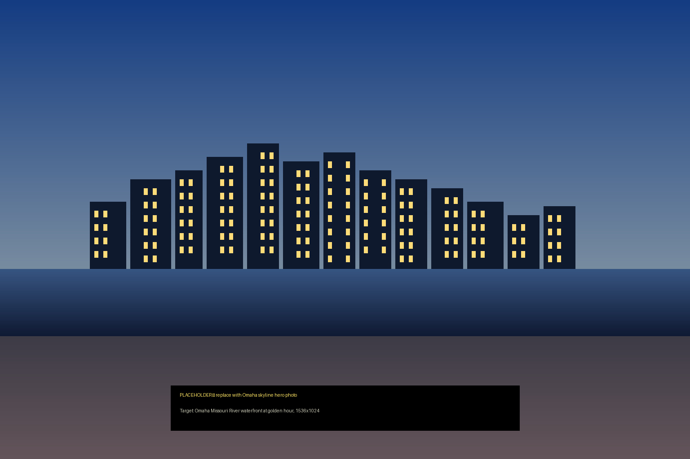

How does Nebraska wage, overtime and meal-break law work in 2026?
$15.00 an hour from 1 January 2026, FLSA overtime over 40, and no state meal-break mandate. Nebraska just doubled the federal floor through the ballot box.
· Nebraska, United States guide



Omaha, Nebraska · Hero image: replace with Unsplash photo of Omaha skyline before publish
Nebraska employers who last set their pay bands before 2023 may be running a wage that violates state law. The floor moved from $9.00 to $15.00 in four years.
An Omaha customer-service team of 20, each paid the old federal floor of $7.25, owes $7.75 per employee per hour in back wages from 1 January 2026. That is over $300,000 a year in exposure before penalties.
Most out-of-state employers know Nebraska raised its minimum wage. Fewer have actually updated their national pay bands, offer-letter templates, and tipped-employee configurations to match.
This page covers the $15.00 floor and the CPI escalator due in 2027, the federal FLSA overtime rule that applies in Nebraska, the tipped-employee cash wage and tip credit, Nebraska’s semi-monthly pay-frequency requirement, and what the break rules actually are (shorter answer than you expect).
What is Nebraska’s minimum wage in 2026?
Every Nebraska employee earns at least $15.00 an hour from 1 January 2026. That is more than double the federal floor of $7.25.
The rate is locked until 31 December 2026. From 1 January 2027, annual CPI adjustments begin.
The floor was set by the ballot. Nebraska voters passed Initiative 433 in November 2022, mandating a phased increase from $9.00 in 2022 to $15.00 in 2026, then CPI-indexed from 2027 onward.
Jaylen is a warehouse associate in Omaha. You hired him in 2024 at $12.00 an hour. On 1 January 2026 his legal minimum became $15.00. If you did not update his rate, you have owed him $3.00 an hour since then, every shift.
| Wage layer | Hourly rate (2026) | Statute / source |
|---|---|---|
| Federal floor (FLSA) | $7.25 per hour | 29 U.S.C. § 206(a)(1) |
| Nebraska state floor | $15.00 per hour from 1 January 2026 | Initiative 433 (2022); Neb. Rev. Stat. § 48-1203 |
| City and county floors | None permitted — state preempts local | Nebraska does not permit local minimum-wage increases above the state rate |
| Tipped cash wage | $7.50 per hour, with tip credit up to $7.50 | Initiative 433; Neb. Rev. Stat. § 48-1203.01 |
| Full-time gross at floor | $31,200 per year at 40 hours per week | Derived: $15.00 × 2,080 hrs |
| 2027 rate | $15.00 + CPI adjustment (announced by Nebraska DOL in autumn 2026) | Initiative 433; phased increase ends, CPI escalator begins |
Three things catch multi-state employers:
- The federal floor is irrelevant. Nebraska’s $15.00 is more than double federal. Any national policy written against the federal $7.25 is legally deficient for every Nebraska employee.
- No city overrides run higher. Unlike California, Nebraska does not permit cities or counties to set a higher local floor than the state rate. Omaha, Lincoln, and Bellevue all pay $15.00.
- The escalator starts in 2027. There is no fixed 2027 number yet. Nebraska’s Department of Labor will announce the CPI-adjusted rate before year-end 2026. Budget for a modest upward adjustment.
The journey from $9.00 to $15.00
Initiative 433 set a four-year glide path. Employers who tracked each January move are already compliant. Those who did not face back-wage exposure from the first date they missed, not just from 2026. An employee paid $11.00 for all of 2025 (when the floor was $13.50) is owed $2.50 an hour going back twelve months.
| Year | Nebraska minimum wage | Federal floor |
|---|---|---|
| 2022 | $9.00 (pre-initiative) | $7.25 |
| 2023 | $10.50 (Initiative 433, Phase 1) | $7.25 |
| 2024 | $12.00 (Initiative 433, Phase 2) | $7.25 |
| 2025 | $13.50 (Initiative 433, Phase 3) | $7.25 |
| 2026 | $15.00 (Initiative 433, Phase 4 — final step) | $7.25 |
| 2027+ | $15.00 + annual CPI adjustment | $7.25 |
Nebraska voters also passed a 2024 initiative expanding paid sick time, effective October 2025. That is covered on the Leave & PTO page. These ballot-measure results signal a continuing labour-friendly trend: do not assume the $15.00 floor is the last move the Nebraska electorate will make.
When does a Nebraska employer have to pay overtime?
You pay overtime at 1.5 times the regular rate for every hour over 40 in a workweek. Nebraska has no state overtime statute. Federal FLSA controls.
There is no daily overtime trigger and no double-time. One threshold: 40 hours in a workweek. Every hour above it costs 1.5x.
Marcus works quality control at a Lincoln food-processing plant. His workweek is Sunday through Saturday. He works 9 hours Monday, 9 Tuesday, 8 Wednesday, 8 Thursday, 9 Friday: 43 hours total. You owe overtime on 3 hours at 1.5x his regular rate. The 9-hour days do not independently trigger anything.
| Rule | Federal FLSA (applies in Nebraska) | Source |
|---|---|---|
| Overtime trigger | Over 40 hours in a workweek | 29 U.S.C. § 207(a)(1) |
| Overtime premium | 1.5 times regular rate | 29 U.S.C. § 207(a)(1) |
| Daily overtime | None | No Nebraska statute |
| Double-time | None | No Nebraska statute |
| Seventh-day premium | None | No Nebraska statute |
| Exempt salary basis floor (federal) | $684 per week ($35,568 per year) | 29 CFR Part 541 |
| Workweek definition | Fixed 7 consecutive 24-hour periods, employer-defined | 29 CFR 778.105 |
The workweek is the measuring unit. An employee working 12 hours on Monday and then 7 hours a day Tuesday through Thursday has 33 hours for the week and earns no overtime. The same employee adding a 10-hour Friday hits 43 hours and is owed 3 hours of premium.
Define the workweek once, in writing, before you run payroll. Changing it mid-stream to shift overtime hours across the boundary is an FLSA violation.
Exempt vs non-exempt: where Nebraska employers get caught
To be exempt from overtime, an employee must clear two separate tests, not just one.
- Salary basis. At least $684 a week ($35,568 a year), paid as a fixed salary not reduced by quality or quantity of work. The proposed 2024 federal rule that would have raised this to $1,128 per week was vacated by a US District Court in November 2024. The operative floor in 2026 remains $684 per week.
- Duties test. Primary duty must be executive, administrative, professional, computer, or outside sales work. Title does not determine exemption. A supervisor spending 80 percent of their shift on the same production line as hourly staff fails the duties test regardless of what their offer letter says.
Samantha manages the front desk at a Grand Island hotel at a $40,000 annual salary. Her primary duties are checking in guests and answering phones alongside hourly front-desk staff. She fails the duties test. She is non-exempt and is owed overtime on every hour she works beyond 40 in a week. Run the duties test before the offer letter goes out, not after the complaint arrives.
How does Nebraska’s tipped-employee wage work?
You can pay a tipped employee as little as $7.50 an hour in cash wages. The tip credit is $7.50 an hour.
Tips plus cash wages must reach $15.00 every pay period. Any shortfall is your obligation.
Initiative 433 set the tipped rate at half the regular minimum, so both moved in lockstep: when the floor hit $15.00, the tipped cash wage hit $7.50.
Brianna waits tables in a Lincoln restaurant. You pay her $7.50 an hour cash. On a 40-hour week she earns $280 in cash wages plus $340 in tips: $620 total, $15.50 average per hour. Compliant. On a slow week she earns only $200 in tips: $480 total, $12.00 average. You owe her a $3.00 per hour make-up for the full week, on top of the $280 cash.
| Jurisdiction | Tipped cash wage (2026) | Tip credit | Source |
|---|---|---|---|
| Nebraska | $7.50 per hour | $7.50 max | Initiative 433; Neb. Rev. Stat. § 48-1203.01 |
| Federal (FLSA default) | $2.13 per hour | $5.12 max | 29 U.S.C. § 203(m) |
| Kansas (neighbour, federal floor) | $2.13 per hour | $5.12 max | K.S.A. 44-1203 |
| Iowa (neighbour, federal floor) | $4.35 per hour | $2.90 max | Iowa Code § 91D.1 |
| Colorado (neighbour) | $11.40 per hour (2026) | No more than $3.02 per hour | C.R.S. § 8-6-109 |
Three operational rules for hospitality and food-service employers:
- The make-up runs every pay period, not every shift. Track tip totals per pay period. A strong Friday cannot offset a weak Monday from a different pay period if they fall across a pay-period boundary.
- Service charges are not tips. A mandatory 18% charge added to a bill is employer revenue, not employee property. If you pass some of it to staff, it is a wage (taxable) and cannot count against the tip credit.
- Tip pools have limits. Federal law bars employers, managers, and supervisors from sharing in any tip pool. Non-tipped back-of-house staff can be included in a tip pool only if you do not take a tip credit against their wages. Nebraska defers to the federal rule.
The Nebraska tipped cash wage is significantly higher than the federal default. An employer who transferred their tipped-wage configuration from a federal-floor state will be underpaying Nebraska tipped employees by $5.37 an hour in cash wages alone. Teamed’s onboarding flow sets the tipped cash wage at the Nebraska rate and runs the per-pay-period make-up check automatically.
Do Nebraska employers have to give meal or rest breaks?
No statutory requirement for adult employees. Nebraska has no meal-break or rest-break law for workers aged 18 and over.
Federal FLSA does not require breaks either. What matters is what you do when you offer them.
Rest breaks under 20 minutes count as paid time worked. Meal periods of 30 minutes or more, where the employee is fully relieved of all duties, can be unpaid.
| Break type | Federal treatment (applies in Nebraska) | Source |
|---|---|---|
| Short rest break (5 to 20 minutes) | Compensable working time; must be paid | 29 CFR 785.18 |
| Bona fide meal period (30+ minutes) | Unpaid if employee is fully relieved of duty | 29 CFR 785.19 |
| Meal period with duties (eating at desk while on call) | Compensable; “engaged to wait” doctrine applies | 29 CFR 785.19 |
| Nursing-mother breaks | Reasonable break time and private non-bathroom space for one year post-birth | PUMP Act; FLSA § 7(r) |
| Nebraska state meal-break rule for adults | None | No Nebraska statute |
| Minors (under 16) | 30-minute break for shifts over 8 hours; no more than 8 hours per day on school days | Nebraska child labour statutes; federal FLSA |
Marcus eats lunch at his Lincoln plant workstation while watching for production-line alerts every day. His 30-minute lunch is paid time, because he is never fully relieved of duty. The auto-deduct set up in payroll is creating a wage violation on every one of those lunches. This is the single most common Nebraska payroll audit finding: auto-deductions running against employees who are not genuinely off the clock.
Two things to get right:
- Auto-deduct only when the employee is fully off the clock for 30 or more minutes. A 5-minute interruption — answering a phone, handling a customer, checking a machine — reverts the entire period to compensable time.
- Document the break structure in the handbook. “Take breaks when you need one” creates wage exposure when an employee later claims they never got one. Written policy and clock records are your evidence.
The multi-state contrast
An employer hiring in Nebraska and California runs two entirely different break regimes in parallel. California requires a 30-minute unpaid meal by the end of the 5th hour plus a second before the 10th, and 10-minute paid rests every 4 hours. Miss either in California and you owe one hour of premium pay per missed break per day. Miss a break in Nebraska and you have no statutory liability, provided the break was not required by your own handbook. Set state-specific policies. Do not apply Nebraska’s clean sheet to a California employee.
How often must a Nebraska employer pay wages?
Nebraska requires wages to be paid at least semi-monthly or bi-weekly. This is stricter than the federal floor and stricter than several neighbour states.
Semi-monthly means twice per calendar month on fixed dates. Bi-weekly means every 14 days: 26 payrolls per year.
Monthly payroll is not permitted for Nebraska employees under the state statute. An employer running a monthly schedule for a Nebraska hire is non-compliant from day one.
| Rule | Nebraska | Source |
|---|---|---|
| Pay frequency minimum | Semi-monthly or bi-weekly | Neb. Rev. Stat. § 48-1212 |
| Designated paydays | Fixed, set in advance, posted or provided in writing | Neb. Rev. Stat. § 48-1212 |
| Final pay · termination or resignation | Next regular payday or within 2 weeks of separation, whichever is sooner | Neb. Rev. Stat. § 48-1230 |
| Form of payment | Cash, check, direct deposit with employee consent, or payroll card | Neb. Rev. Stat. § 48-1212 |
| Wage deductions | Only those required by law or authorised in writing by employee | Neb. Rev. Stat. § 48-1228 |
Three points for out-of-state employers:
- Monthly is not enough. An employer running a single monthly payroll across a US remote workforce needs a Nebraska-specific bi-weekly or semi-monthly cadence. The simplest fix is running the whole remote workforce bi-weekly, the most common cadence nationally.
- The two-week final-pay window is tight but predictable. Unlike California’s immediate-final-pay rule on termination, Nebraska gives you until the next regular payday or two weeks, whichever comes first. Build this into every termination workflow: when is the next payday? Is it within two weeks? If yes, run the final-pay on that date. If not, run an off-cycle batch.
- Unauthorised deductions are wage theft. You cannot deduct for equipment damage, uniform costs, or cash-register shortfalls unless the employee provides written authorisation at the time of hire or the incident. Courts in Nebraska have sided firmly with employees on this point.
Does Nebraska mandate paid sick leave?
Yes, from 1 October 2025. Nebraska voters passed a second ballot initiative in 2024 — the Nebraska Healthy Families and Workplaces Act (Initiative 436, amended by LB 415) — requiring private employers with 11 or more employees to provide paid sick time.
Employees accrue 1 hour of paid sick time per 30 hours worked. Employers with 20 or more employees cap accrual and use at 56 hours per year. Smaller employers (11–19 employees) cap at 40 hours per year.
Accrual begins after 80 hours of employment. Unused hours carry over to the following year.
This law is relatively new and employers are still building their accrual systems. Three operational points:
- It applies statewide from October 2025. Any Nebraska hire on payroll after that date accrues sick time on every hour worked, including part-time, seasonal, and temporary workers at employers of 11 or more.
- Accrued sick time is paid at the regular rate. You cannot pay out sick leave at a lower rate than the employee’s current hourly or salaried rate.
- No requirement to cash out on termination. Unlike PTO that vests as earned wages in some states, Nebraska’s Healthy Families Act does not require payout of unused accrued sick time at separation. An employer who voluntarily combines sick leave into a general PTO bucket may face different rules depending on how the policy is written.
The full paid sick-leave analysis, including qualifying reasons for use, the notice requirements, and how the law interacts with FMLA, is on the Nebraska Leave & PTO page.
Nebraska is not a federal-floor state. Treat it accordingly.
Nebraska used to be straightforward: federal floor on minimum wage, FLSA overtime, minimal break rules. That changed in 2022 and again in 2024.
The $15.00 minimum wage is one of the 15 highest state floors in the country. The tipped cash wage at $7.50 is more than triple the federal default. Paid sick leave is now mandatory for mid-size and large employers.
A national payroll policy written against the federal floor mis-prices every Nebraska hourly worker and mis-configures every tipped role.
Five things to get right before your first Nebraska hire:
- Audit every pay band against $15.00. Any role that was previously set based on the federal floor or the old Nebraska rate needs a rate card review. Anyone below $15.00 is non-compliant from the first day of January 2026.
- Update tipped-employee configurations to $7.50 cash wage. The Nebraska tipped rate moved with the minimum wage. Any system still paying $2.13 or $4.35 to Nebraska tipped workers is running a significant shortfall.
- Set payroll cadence to bi-weekly or semi-monthly. A monthly payroll that works fine in Kansas or Iowa violates Nebraska statute on the Nebraska employee.
- Configure the 56-hour sick-leave accrual for employers with 20+ employees. Nebraska’s Healthy Families Act is new. The October 2025 effective date means most employees who were on payroll through late 2025 have already begun accruing. Retroactive back-accruals are the first audit trigger.
- Document your break policy per state. Nebraska has no adult break mandate. That is not a reason to skip the policy. It is a reason to write a clear, defensible one that shows auto-deductions only apply to bona fide unpaid meal periods.
Budget for a 2027 minimum-wage increase. The CPI escalator kicks in from 1 January 2027, and Nebraska’s Department of Labor will publish the adjusted rate in autumn 2026. Set a calendar reminder for November 2026 and update your Nebraska pay bands before year-end.
How Teamed runs Nebraska wage and hour end to end
Teamed becomes your legal employer of record in Nebraska for a flat $599 per employee per month.
You hire the person. We classify them exempt or non-exempt, run a bi-weekly payroll at the $15.00 floor or higher, configure the tipped cash wage at $7.50 for any tipped roles, set up sick-leave accrual under the Healthy Families Act, and handle the two-week final-pay window if a separation event lands.
Zero FX mark-up. Statutory employer cost passes through itemised on every invoice.
What that looks like, day to day:
- Onboarding. Every offer letter runs an exempt-versus-non-exempt screen against the federal salary basis and the duties test. Pay bands get checked against the $15.00 Nebraska floor at hire. Borderline classifications come back to your country specialist for a 15-minute review before the offer goes out.
- Time and pay. The platform records workweek hours, on-call entries, meal break status (auto-deducted only when fully off the clock for 30+ minutes), and tip declarations for tipped roles. Overtime runs at 1.5x for hours above 40 per workweek. The per-pay-period tip-credit make-up runs automatically on any shortfall week.
- Sick-leave accrual. Accrual starts from hour 81 of employment and tracks at 1 hour per 30 worked. The cap (40 or 56 hours, depending on employer size) applies at the account level. The accrued balance shows on every payslip. Carry-over to the new year is automatic.
- Final pay. A termination event entered into the system schedules the final-pay run against the next regular payday or the two-week statutory deadline, whichever comes first. An off-cycle run fires if neither the payday nor the two-week clock falls in the ordinary cycle.
- Annual wage updates. The CPI escalator from 2027 onward means the Nebraska minimum wage changes every January. Teamed picks up the Nebraska DOL announcement and updates the pay-floor configuration before the first January payroll runs.
- Multi-state employees. The work-location field on each record drives which rules apply. A Nebraska employee temporarily working a two-week project in California gets California rules (including the 5th-hour meal-break mandate) for those two weeks.
Behind the platform sits a named US specialist who tracks the Nebraska Legislature and Nebraska DOL for rulemaking that affects your hires. Nebraska passed two employment-law ballot initiatives in two years. Teamed’s payroll engine picks up the change before your next payroll cycle, not after your annual audit.
Contractor onboarding, EOR payroll, and entity graduation all live on one platform. A Nebraska contractor who converts to W-2 keeps their record. That same employee can graduate from EOR to your own US entity without changing systems.
Pricing is one number per employee per month, in any currency you pay in. No FX mark-up. Statutory employer cost (FICA, FUTA, Nebraska UI, workers’ comp) passes through itemised on every invoice. No setup fees. No exit fees.
When EOR is the right call (and when it isn’t)
EOR works while you’re testing the Nebraska market, ramping a small remote team, or running a handful of hires alongside a larger US payroll elsewhere.
Once you have six or more Nebraska employees and predictable hiring ahead, the maths of running your own US entity (Delaware C-corp foreign-qualified into Nebraska) starts to compete with the EOR fee. Teamed’s Crossover Calculator tells you the month the EOR model stops being right. The conversation is built into the relationship from day one.
The Nebraska minimum-wage glide path caught three clients in the same week in early 2026. Each had a pay band last reviewed in 2023 when the floor was $10.50. By January 2026 they were $4.50 per hour below the state minimum on every affected employee. Back-wage exposure compounded from multiple phase dates, not just the most recent one. We now run a Nebraska pay-band audit at every annual renewal so the escalator never catches a client off guard again.
Nebraska voters moved the wage floor twice in two years.
Get the $15.00 rate into every pay band, the $7.50 tipped cash wage into every restaurant configuration, and the bi-weekly cadence into the payroll system before the first hire.
Then set a reminder for November 2026: the CPI escalator kicks in on 1 January 2027.